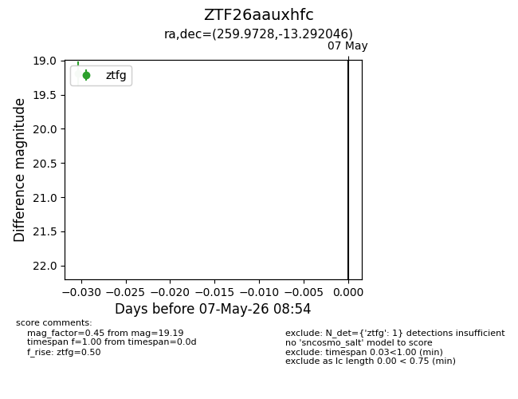
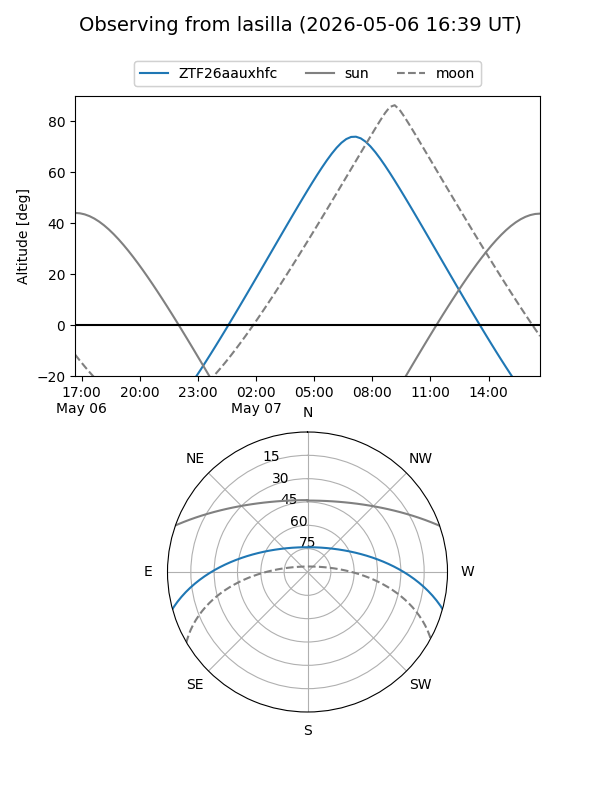
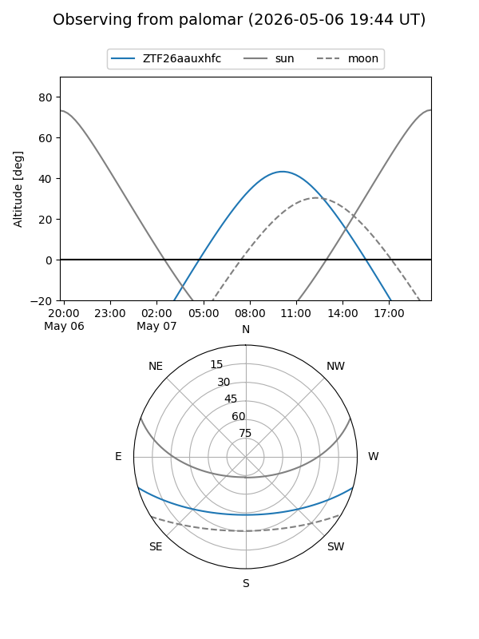

ZTF26aauxhfc
Target ZTF26aauxhfc at 2026-05-07 08:55
Aliases and brokers:
FINK: link
Lasair: link
ALeRCE: link
alt names
ZTF26aauxhfc (ztf,fink_ztf)
Coordinates:
equatorial (ra, dec) = 259.9728,-13.29205
equatorial (HMS+DMS) = 17:19:53.47,-13:17:31.36
galactic (l, b) = (10.1149,+13.41575)
Flags:
Photometry:
last ztfg=19.19
1 ztfg detections
Lightcurve

Visibility


Additional plots